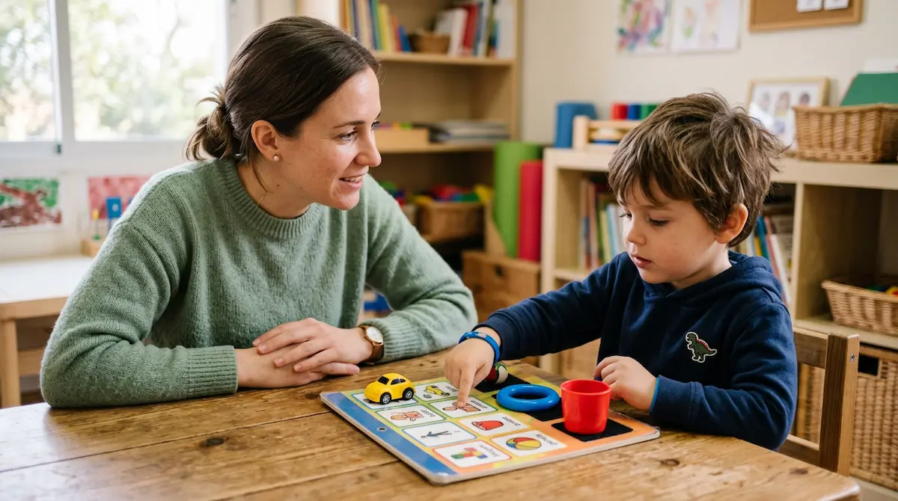

Autismo (TEA) e integración sensorial: comprender el mundo desde su piel
El Trastorno del Espectro Autista (TEA) no es una forma incorrecta de ver la realidad, sino una manera radicalmente diferente de procesar los sentidos, la comunicación y el entorno. Comprender el autismo en la infancia nos invita a mirar más allá de las conductas visibles para entender cómo perciben el mundo y qué apoyos sensoriales y emocionales necesitan para sentirse seguros. He reunido aquí una guía serena para acompañar su desarrollo con respeto y empatía. Pincha en cada tarjeta para profundizar en cada tema.

Aceptar sin miedo el diagnóstico
Recibir el diagnóstico de TEA es el inicio de un camino de comprensión. Abordemos la noticia desde la serenidad para conectar de verdad con su singularidad.

El universo de los sentidos
Descubre cómo influye la hiper o hipersensibilidad táctil, auditiva y visual en su día a día y por qué el entorno puede saturar o calmar su sistema nervioso.

Estructurar el espacio y la calma
La predictibilidad aporta seguridad. Aprende a diseñar un hogar adaptado que reduzca la ansiedad y facilite las transiciones cotidianas sin fricciones.

Puentes hacia la conexión
Explora herramientas de comunicación alternativa y apoyos visuales respetuosos que facilitan la expresión y reducen la frustración en la convivencia.

Alianzas y apoyos en el aula
Fomentar la adaptación metodológica y la comprensión del profesorado garantiza un entorno escolar respetuoso, seguro y libre de sobreestimulación.

Acompañar las crisis sensoriales
Comprende la diferencia entre una rabieta y una saturación o colapso sensorial, aprendiendo a ofrecer un refugio seguro de calma y contención.

Respetar sus tiempos de vínculo
Comprender cómo se relacionan y disfrutan del juego con los demás, validando sus propios ritmos sociales sin forzar dinámicas que les agoten.

Autonomía y autoestima positiva
Potenciar sus intereses genuinos, celebrar cada pequeño avance y fomentar su independencia construye una autopercepción firme y segura.